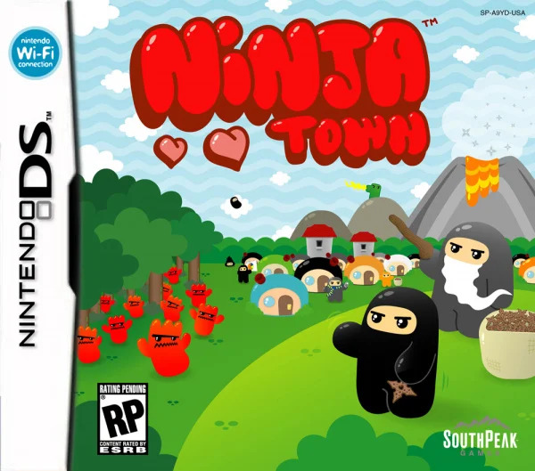

Ninjatown (NDS) Guide

A general guide for Ninjatown (NDS)
Contents
Tips
There are a few things you can do with your Ninjas to maximize your chances of clearing the stage.
Use the Wee Ninjas
Although they may seem weak, wee ninjas do certainly have a niche in that they are completely immune to status effects. This trait can be useful against:
- Zombie Ninjas (Zombification)
- Dark Forest (Poison)
- Syrup Devil (Slow)
- Tribal Devil (Slow)
The only status that they are not immune to is fire, so Lava Devils will still be able to spread fire to them.
Ninja Attack Priority
You can set your ninjas to target the weakest (least health), strongest(most health), or closest enemy. But for certain ninjas, some are better than others. Here are some general rules when deciding what you should set your ninjas to attack.
- If the ninja is ranged, it should target weakest.
- If the ninja has a status effect, it should target strongest.
- If the ninja is a defensive unit, it should target closest.
The reasoning behing these choices are as follows:
- Ranged ninjas have the longest range, therefore can pick off the most stragglers
- Status ninjas cannot stack status effects, meaning targeting by strongest (highest health) means it is always attacking a new enemy to spread status
- Defensive ninjas will hold the enemy in place for the Ranged ninjas, Damaging ninjas, and the slower Status ninjas. They do not do much damage, so straying too far from the point at which they're stationed doesn't do much (These units should always be at a choke point).
With these general rules in mind, you should be able to take out most stages with ease.
This guide was based off of escesare's FAQ.
Return to main page